The procedure used in the tests is based on a comparison between a numerical solution and an analytical solution.
Considering that the three bodies problem does not have a known analytical solution, the problems used in the tests generally will be based on systems of two particles, except in special cases.
Tests currently implemented:
- Free fall in a drag fluid.
- Harmonic motion
- Damped harmonic motion
For executiong the tests via pyparticles_add we must use the option -d
pyparticles_add -d <test_name>
Commands for executing available tests:
pyparticles_app -t fall
pyparticles_app -t harmonic
pyparticles_app -t dharmonic
The free fall test is based on a single particle that falls in a constant force field with a drag fluid (or air).
The equation of motion is defined as follow:
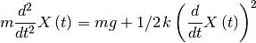
Where:
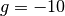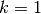
And as initial condition I’ve used:
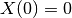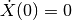
The analytical solution is given by the following expression:
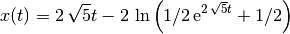
In pyparticles the problem is desribed as follow:
constf = cf.ConstForce( self.pset.size , u_force=[ 0 , 0 , -10.0 ] , dim=self.pset.dim )
drag = dr.Drag( self.pset.size , Consts=1.0 )
multi = mf.MultipleForce( self.pset.size )
multi.append_force( constf )
multi.append_force( drag )
multi.set_masses( self.pset.M )
The first particle is fixed to a point while the second free to move.
The equation of motion is defined as follow:
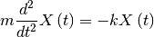
Where:
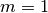
And as initial condition I’ve used:
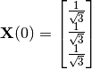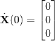
The analytical solution is given by the following expression:
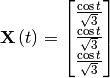
In pyparticles the problem is desribed as follow:
self.pset.X[0,:] = 0.0
self.pset.X[1,:] = 1.0 / np.sqrt(3)
ci = np.array( [ 0 ] )
cx = np.array( [ 0.0 , 0.0 , 0.0 ] )
costrs = csx.ConstrainedX( self.pset )
costrs.add_x_constraint( ci , cx )
self.t = np.zeros(( self.steps ))
self.x = np.zeros(( self.steps , self.pset.dim ))
self.xn = np.zeros(( self.steps , self.pset.dim ))
spring = ls.LinearSpring( self.pset.size , self.pset.dim , Consts=1.0 )
The first particle is fixed to a point while the second free to move. The damping force has a magnitude proportional to the velocity.
The equation of motion is defined as follow:
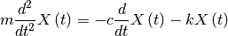
Where:
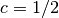
And as initial condition I’ve used:
The analytical solution is given by the following expressions:
The magnitude of 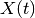 is:
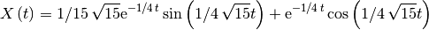
The vectorized and effective solution of the initial value problem, is:
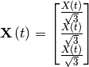
In pyparticles the problem is desribed as follow:
self.pset.X[0,:] = 0.0
self.pset.X[1,:] = 1.0 / np.sqrt(3)
ci = np.array( [ 0 ] )
cx = np.array( [ 0.0 , 0.0 , 0.0 ] )
costrs = csx.ConstrainedX( self.pset )
costrs.add_x_constraint( ci , cx )
spring = ls.LinearSpring( self.pset.size , self.pset.dim , Consts=1.0 )
damp = da.Damping( self.pset.size , self.pset.dim , Consts=0.5 )
multi = mf.MultipleForce( self.pset.size )
multi.append_force( spring )
multi.append_force( damp )
multi.set_masses( self.pset.M )